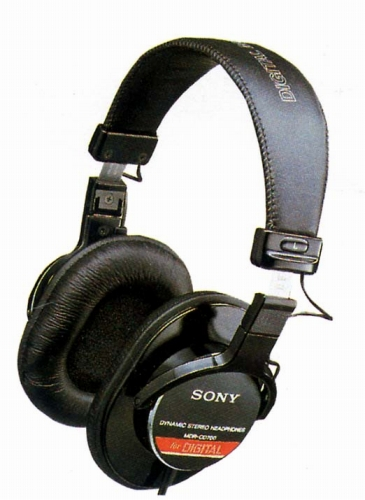
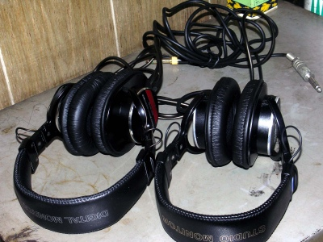
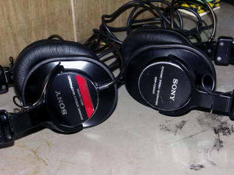

MDR-CD700

■価格 20,000円
■型式 ダイナミック型密閉式
■振動板 40�oドーム型(ゴールドダイアフラム）
■インピーダンス 63Ω
■再生周波数帯域 5-30,000Hz
■許容入力 1,000mW
■感度 106ｄB/mW
■コード 3ｍ LC-OFCリッツ線
ステレオ2ウェイプラグ
■重量 230g（コード含まず）
■発売 1986年10月
■販売終了 1988〜89年頃
■備考
ある意味でMDR-CD900とともにMDR-CD900STの母体となったモデル
MDR-CD900とMDR-CD900STの差異の一つにヘッドバンドがあげられるが、
渡りケーブルの処理を除けば、MDR-CD700のヘッドバンド・アームが900STとほぼ同一形態である。
 
左がMDR-CD700、右がMDR-CD900ST、ともに管理人所有機